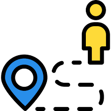

INEUEL
INICIO
CONSEJOS
RUTAS
APOYOS
Apoyos solidarios Upb

Universidad Bolivariana
Mas Informacion
Ir al link de ayuda
Subsidio de Transporte Universitario
Tele Antioquia
Mas Informacion
Ir al link de ayuda
Transporte Escolar Secretaria
Secretaria De Medellin
Mas Informacion
Ir al link de ayuda